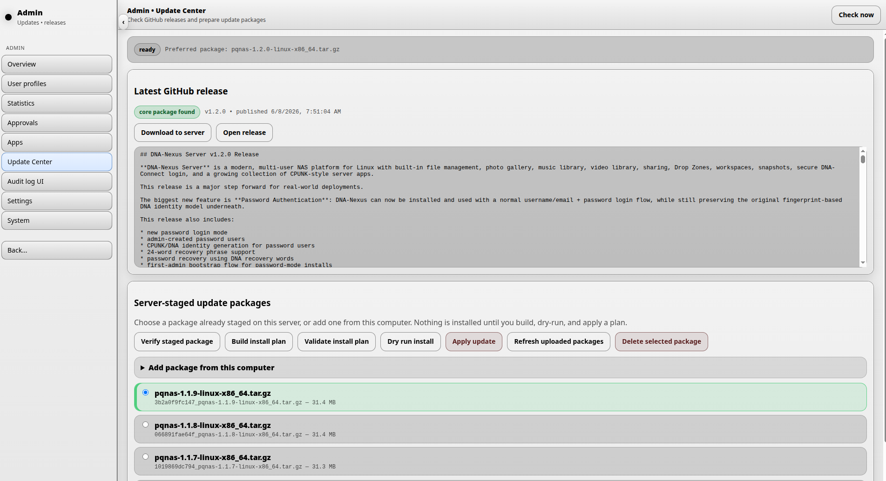
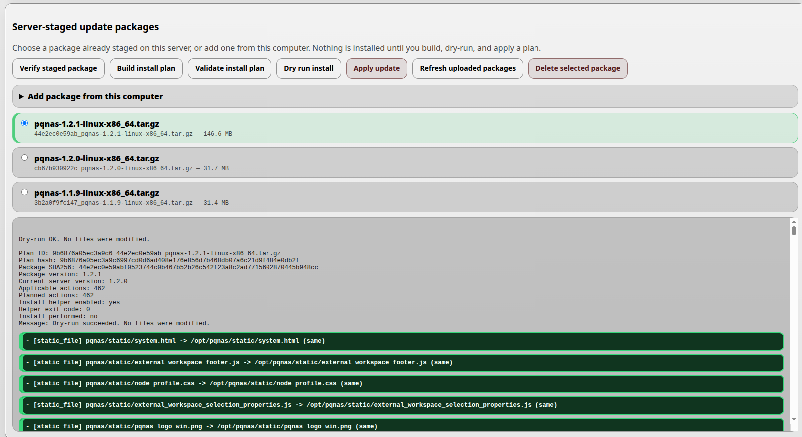
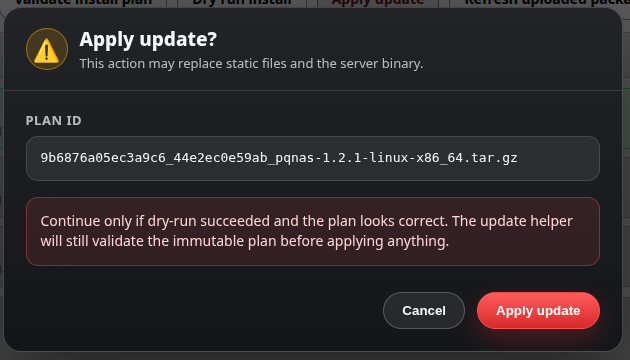

Update Center
DNA-Nexus / PQ-NAS is continuously improved with new features, security improvements and reliability fixes. To make these improvements available on the server, an administrator can update the server software from the Update Center.

Checking for updates
The Update Center checks GitHub for the latest available DNA-Nexus / PQ-NAS release. The administrator can also run this check manually by clicking Check now.
When a core update package is found, the Update Center shows it under Latest GitHub release. Compare the latest available version number with the currently installed version. If the GitHub release is newer, the update should be downloaded to the server.
Click Open release to view the release page on GitHub and read more details about the update package.
Downloading an update package
Click Download to server to download the selected update package to the server.
After the package has been downloaded, it appears under Update packages on server. Select the newest package from the list before continuing.
Checking the downloaded package
Click Check downloaded package to inspect the package contents. If the package passes the checks, the Update Center reports Check OK.
At this stage, nothing has been installed yet.
Building and validating the install plan
Next, click Build install plan. This checks the currently installed software components and compares them with the contents of the update package.
After the install plan has been created, click Validate install plan. This performs the final checks and creates a digest summary for the complete plan.
Dry-running the update
If validation succeeds, click Dry-run plan. This performs a test run of the update package before any real installation is applied.

The administrator is shown the files that would change during the update. When the output looks correct, the real installation can be started.
Installing the update
Click Update downloaded packages to start the real update.

A final confirmation is shown before the update is applied. After confirming, the Update Center installs the package.
When everything goes well, the update can complete without downtime. In some cases, the server program should be restarted from the shell after installation:
sudo systemctl restart pqnas.serviceCleaning old packages
Old update packages can be removed from the server by selecting a package and clicking Delete selected package.